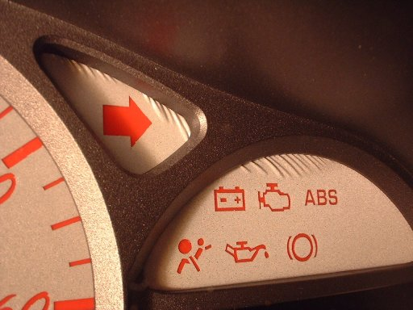
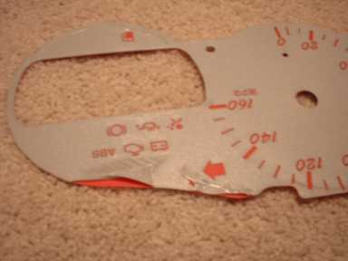

| ||||||||||||||||||||||||||||||||||||||||
These are my thoughts on the ProCarParts 5 color E-Glo Gauges for the 2000+ Toyota Celica GT-S: I just received these today. This is my second set of gauges for my Celica and I'd like to cast my vote and say these are pretty sweet. I had the MMR gauges before and, in my opinion, they suck. I won't go into the details here, but here are 2 pictures that are pretty self-explanatory:   I was going to get the NR Auto gauges but their Customer Service has been very unresponsive. I stumbled upon the ProCarParts gauges on eBay and I'm really happy with them so far. I got them for $40ish (I've seen as low as $33). For the price, they seem to be a really good deal. They look nice and are REALLY easy to install (you don't even need to remove the needles). My only concern now is longevity. We'll see how that goes. -Josh |